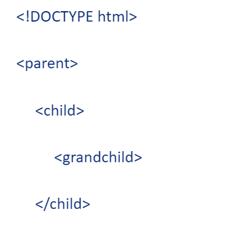
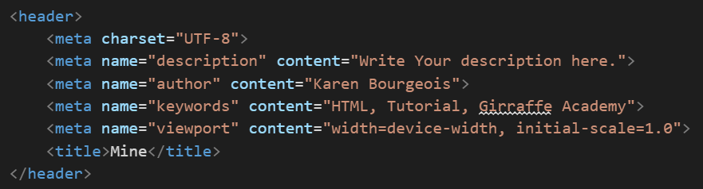
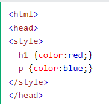
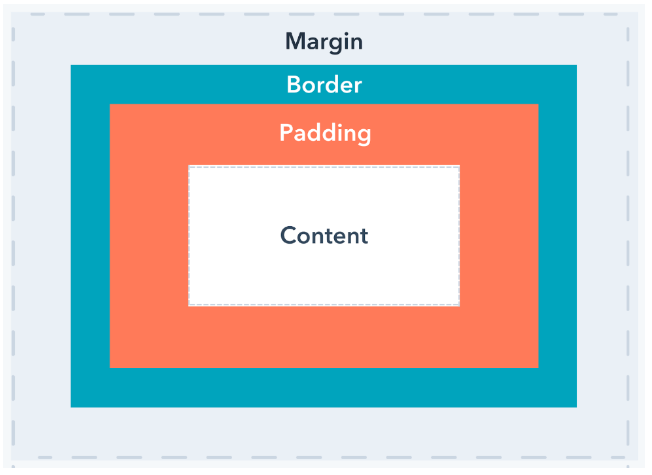

Prework Study Guide

HTML
- The head element contains information about the webpage.
- The body element represents the visible content shown to the user.
- These elements are nested in between open and closing tags.
- HTML stands for Hyper Text Mark-up Language.
- !DOCTYPE html lets the browser know what type of document it is and version.
- HTML tags are like a container and everything that has to do with your website/web app.
- A parent is the first level of code. The HTML tag at the top is a parent.
- A child is nested inside of a parent tag. The tag 'head' is a child of HTML.

- br puts in a line break and not all the space creating a new line does.
- hr put a horizontal rule line to seperate something like paragraphs or sections.
- These to examples are call self-closing tags. They do not need a second like head and p does.
- Comments are useful. They are done with open bracket!--- YOUR COMMENT ---closing bracket.
- Lits are done with the following tags: ul, ol, li. They are not self closing.
- Blocked items will take up the whole width of the screen.
- Inline only takes up the amount of room need to display the content. Other items can sit next to one another.
- Inline also means the formating inside the first tag brackets. Example: style.
- Meta tags live inside the 'head' tags. This is where you can define information about the file. Meta tags are useful for
all kinds of things especially SEO.
- Examples of Meta tags: Charset, Name, Content, Author.

- 'Link' creates the connection to the external file.
- 'rel' attribute specifies the relationship between the current document and the linked document resource.
- The 'href' attribute specifies the location of the external resource.
CSS
- CSS makes your site pretty.
- It stands for Cascading Style Sheet.
- This can be done inline, in the head tags using style tags or external.
- This where you can use the classes and IDs to change certain things about your site.
- A class: .CLASS_NAME, id: #ID_NAME.
- The class can be used mulitple times; where the id cannot.
- You can also use just the tag initials. Example: li, p, body.
- Inline example: 'p style="color: red;"'.
- In file example:

- You can also play with the margins and padding to shape how your site looks.
- Margin is around the outside of your content, border and padding.
- Padding is directly around the content.
- The following picture shows magins and padding.

Git
- git status: checks what branch we are currently on
- git checkout main will change the branch to main. If you want to change it to another branch, it's done the same
way.
- git checkout -b branch-name: creates a new branch and switches to it
- git pull brings information from github.
- git push sends infromation to github.
- git add -A stages the file for commit.
- git commit sends the file to github.
- Commit is followed my -m "YOUR MESSAGE" to let others know what changes you have made.
- Branches are different versions of your file to be able to compare later in case you don't like something.
- Pull Requests let you tell others about changes you've pushed to a branch in a repository on github.
- A repository is where all of your project's files and each file's revision history is stored. Github is a cloud based
storage.
- Git merge will combine multiple sequences of commits into one unified history; the main branch.
- git clone is what you would do to make a copy on your local machine to work on; then you commit changes when you are
done.
JavaScript
- Enter your JavaScript notes here